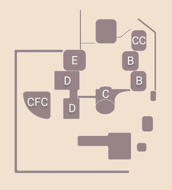

L'infrastructure de l'institut national des postes et télécommunication se présente comme suit: Les salles de cours magistraux et les centres de calul se situent dans le bâtiment B, les amphis se situent dans le bâtiment E, les laboratoires dans le bâtiment D, et juste à coté un centre de formation cotinue (CFC).
